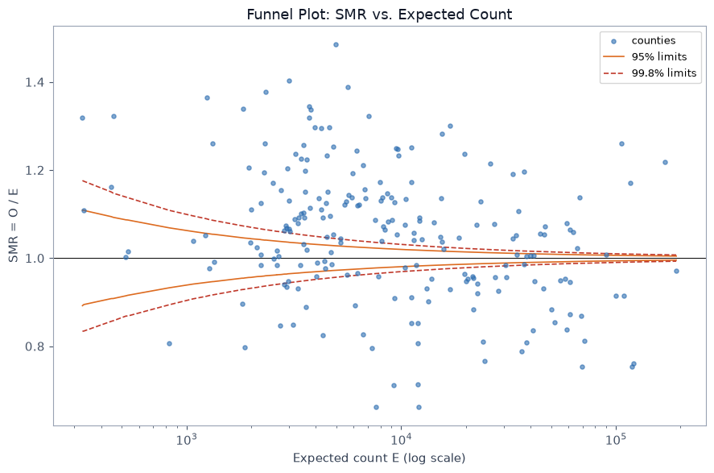

Why raw small-area rates are noisier than they look, demonstrated with real numbers rather than asserted. This notebook is Part 5. Disease Mapping and Bayesian Smoothing (Chapter 5.2 of 11). The worked example uses diabetes_northeast.shp (217 counties). The methods come from geolattice.spatial_statistics.bayes.
Overview
A raw rate, observed cases divided by population, treats every area as if its estimate were equally precise. It is not, and the reason is not subtle geography or data quality: it is basic Poisson sampling theory. This chapter makes that mechanism concrete with the same 217 counties used throughout Parts 2-4, before Chapter 5.3 turns to the data preparation Part 5 needs and Chapters 5.5-5.7 build the fix.
Step
What we do
The mechanism
Derive and verify directly that a rate’s sampling variance scales as \(1/\text{population}\)
The funnel plot
The standard visual: rate against population, with control limits that shrink as population grows
Rankings
A concrete simulation showing how much a county’s rank would shuffle under repeated sampling, purely from noise, split by population size
Other consequences
False hot spots, small-cell privacy, and how Part 2/4’s cluster methods inherit this problem
The goal
Borrowing strength: across all areas (empirical Bayes, Chapter 5.5) or across neighbours (BYM, Chapter 5.6)
API overview
- expected_counts, smr, funnel_limits
Setup
Locate the repository root, import the spatial-statistics helpers, and point DATA at the example files.
Installation. This notebook needs installation option 3 (core, spatial analysis and spatial statistics): pip install "geolattice[statistics]". See “Installation options” in the GeoLattice README.
Code
import sysfrom pathlib import Pathimport numpy as npimport pandas as pdimport geopandas as gpdimport matplotlib.pyplot as pltROOT = Path.cwd().resolve()for candidate in [ROOT, *ROOT.parents]:if (candidate /"pyproject.toml").is_file() and (candidate /"Data").is_dir(): ROOT = candidatebreakelse:raiseFileNotFoundError("Could not find the GeoLattice repository root.")sys.path.insert(0, str(ROOT))DATA = ROOT /"Data"/"00_shared"/"data_spatial_stat"import geolattice.spatial_statisticsfrom geolattice.viz import apply_map_stylefrom geolattice.spatial_statistics.bayes import expected_counts, smr, funnel_limitsapply_map_style()C = {"blue": "#2b6cb0", "red": "#c0392b", "green": "#2f855a", "orange": "#dd6b20","grey": "#718096", "purple": "#6b46c1", "teal": "#2c7a7b"}counties = gpd.read_file(DATA /"diabetes_northeast.shp")O = counties["Dia_count"].to_numpy()POP = counties["POP_Total"].to_numpy()E = expected_counts(POP, observed=O)print(f"geolattice.spatial_statistics : version {geolattice.spatial_statistics.__version__}")print(f"population range: [{POP.min():,.0f}, {POP.max():,.0f}] ({POP.max()/POP.min():.0f}x span)")
geolattice.spatial_statistics : version 0.3.49
population range: [4,444, 2,591,918] (583x span)
Poisson Variability: Var(rate) ∝ 1/Population
If cases occur independently at a constant true rate \(p\), the observed count \(O\) in a population of size \(n\) is (approximately, for rare-ish outcomes) \(O \sim \text{Poisson}(np)\), so the rate\(\hat p = O/n\) has
A 100-fold difference in population produces a 100-fold difference in variance: a 10-fold difference in standard error. This is not an assumption; it follows directly from the definition of a rate as a ratio of a random count to a fixed denominator.
Code
p =0.08# a representative diabetes prevalencefor pop in (5_000, 50_000, 500_000, 5_000_000): var_rate = p * (1- p) / popprint(f"population = {pop:>10,}: Var(rate) = {var_rate:.3e}, SE = {np.sqrt(var_rate):.5f}")
population = 5,000: Var(rate) = 1.472e-05, SE = 0.00384
population = 50,000: Var(rate) = 1.472e-06, SE = 0.00121
population = 500,000: Var(rate) = 1.472e-07, SE = 0.00038
population = 5,000,000: Var(rate) = 1.472e-08, SE = 0.00012
Each 10-fold increase in population divides the standard error by exactly \(\sqrt{10} \approx 3.16\): verified directly above (each row’s SE is the previous row’s divided by ≈3.16). Nothing about the disease process changed across these four rows; the only thing that changed was the size of the denominator.
The Funnel Plot
The standard way to see this in real data: plot the SMR against \(E\) (expected count, a proxy for population), and overlay the Poisson control limits from funnel_limits: the “funnel” shape is the \(1/\sqrt{E}\) scaling made visible.
Code
raw = smr(O, E)limits = funnel_limits(E, levels=(0.95, 0.998))fig, ax = plt.subplots(figsize=(9, 6))ax.scatter(E, raw, s=14, color=C["blue"], alpha=0.6, zorder=3, label="counties")ax.plot(limits["expected"], limits["lo_0.95"], color=C["orange"], lw=1.2, label="95% limits")ax.plot(limits["expected"], limits["hi_0.95"], color=C["orange"], lw=1.2)ax.plot(limits["expected"], limits["lo_0.998"], color=C["red"], lw=1.2, ls="--", label="99.8% limits")ax.plot(limits["expected"], limits["hi_0.998"], color=C["red"], lw=1.2, ls="--")ax.axhline(1.0, color="k", lw=0.7)ax.set_xscale("log")ax.set_xlabel("Expected count E (log scale)")ax.set_ylabel("SMR = O / E")ax.set_title("Funnel Plot: SMR vs. Expected Count")ax.legend(fontsize=9)plt.tight_layout()plt.show()from scipy import stats as _statslo_own = _stats.poisson.ppf(0.025, E) / Ehi_own = _stats.poisson.ppf(0.975, E) / Eoutside = (raw < lo_own) | (raw > hi_own)print(f"counties outside their OWN 95% control limit: {int(outside.sum())} of {len(raw)} ({outside.mean():.1%})")

counties outside their OWN 95% control limit: 189 of 217 (87.1%)
The control limits visibly narrow (funnel-shaped) as \(E\) grows: exactly the \(1/\sqrt{E}\) pattern from Section 3. A county near the narrow end of the funnel (large \(E\)) needs only a small deviation from 1.0 to fall outside the limits; a county near the wide mouth (small \(E\)) can sit far from 1.0 and still be entirely consistent with random Poisson variation around the same true rate as everyone else. Reading the raw scatter without the funnel overlay risks treating a small county’s noisy extreme as if it were as informative as a large county’s equally-far-from-1.0 value: they are not remotely comparable.
A striking 87% of counties fall outside their own 95% Poisson control limit: far more than the 5% pure sampling noise alone would produce. This is not a sign the funnel plot is wrong; it is evidence of real overdispersion: diabetes prevalence genuinely varies across counties for reasons beyond Poisson sampling variability (Part 2 already found Moran’s I = 0.24 in the raw rate: real, spatially structured variation, not noise). The funnel plot’s job is to separate the two sources of spread, not to assume one of them away: Section 3’s noise component still needs to be discounted before the remaining variation can be trusted as signal: precisely the decomposition empirical Bayes performs formally in Chapter 5.5.
Consequence: Unstable Rankings
A concrete demonstration: suppose, hypothetically, every county had exactly the same true rate. League tables (top-10 lists, rankings by rate) would still fluctuate wildly under repeated sampling: purely from noise: and the fluctuation should depend on population size in exactly the way Section 3 predicts.
Code
rng = np.random.default_rng(1)true_rate = O.sum() / POP.sum() # one common rate for every county, by constructionsmall_idx = np.argsort(POP)[:5]large_idx = np.argsort(POP)[-5:]print("5 smallest counties (population):", POP[small_idx].round(0).tolist())print("5 largest counties (population):", POP[large_idx].round(0).tolist())n_sims =200rank_std_small, rank_std_large = [], []for _ inrange(n_sims): O_sim = rng.poisson(true_rate * POP) ranks = pd.Series(O_sim / E).rank().to_numpy() rank_std_small.append(ranks[small_idx]) rank_std_large.append(ranks[large_idx])rank_std_small = np.std(np.array(rank_std_small), axis=0).mean()rank_std_large = np.std(np.array(rank_std_large), axis=0).mean()print(f"\nmean rank standard deviation across {n_sims} simulated resamples (rank out of 217):")print(f" 5 smallest counties: {rank_std_small:.1f}")print(f" 5 largest counties : {rank_std_large:.1f}")
5 smallest counties (population): [4444.0, 4508.0, 6055.0, 6188.0, 7082.0]
5 largest counties (population): [1579085.0, 1605703.0, 1635571.0, 2290044.0, 2591918.0]
mean rank standard deviation across 200 simulated resamples (rank out of 217):
5 smallest counties: 94.9
5 largest counties : 24.8
Even though every county has the identical true rate by construction, a small county’s rank in the league table bounces around by roughly a third of the entire table’s length from one random resample to the next; the largest counties’ rank is far more stable. Any “top 10 highest-rate counties” list built from raw rates is, for the smaller counties on it, close to a random draw: not a ranking of real underlying differences.
Other Consequences
False hot spots. Every method in Part 4 (Gi*, LISA, the scan statistic) is applied to raw rates or counts unless explicitly adjusted; a small county’s noisy extreme can register as a “hot spot” purely from the variance shown here, not a real elevated risk (Part 4, Chapter 4.7, Bridge 2, already previewed this directly with this Part’s own dataset).
Small-cell privacy. A county reporting a handful of cases out of a small population risks re-identifying individuals, particularly for sensitive outcomes: a data-governance concern layered on top of the statistical instability, and one reason official statistics agencies suppress small cells regardless of whether the resulting rate looks unusual (Chapter 5.10 returns to this).
Misleading regionalisation and regression. Part 3’s spatial regression and Part 4’s regionalisation both treat every observation as equally informative unless population is explicitly included as a weight or covariate; a handful of small, noisy counties can disproportionately influence a fitted relationship or a region’s attribute profile.
The Goal: Borrowing Strength
The fix in both cases to come is the same underlying idea, applied at two different scopes: use information from elsewhere to stabilise an area’s own noisy estimate, in proportion to how noisy that estimate actually is (Section 3’s variance, not just population as a rule of thumb).
Empirical Bayes (Chapter 5.5) borrows strength across all areas: every county’s estimate is pulled toward an overall (or covariate-adjusted) mean, with the pull strength set by each area’s own expected count.
Spatial Bayesian smoothing: BYM (Chapters 5.6-5.7) borrows strength across neighbours specifically: an area’s estimate is pulled toward its local neighbourhood, respecting real spatial trends rather than averaging distant, dissimilar regions together.
Both approaches keep the small-area rate honest about its own uncertainty while still using every county’s data
they do not simply discard small counties, which would waste real information.
Summary and Conclusions
This chapter made the small-area estimation problem concrete, not just asserted.
What we did
Derived and verified \(\text{Var}(\text{rate}) \propto 1/\text{population}\) directly: each 10-fold increase in population divides the standard error by \(\sqrt{10}\).
Built a funnel plot on real data, showing the control limits narrow exactly as predicted.
Ran a 200-replicate simulation under a common true rate for every county, showing the five smallest counties’ rank fluctuates roughly 4x more than the five largest counties’ rank, purely from sampling noise.
Reviewed three further consequences: false hot spots (already previewed in Part 4), small-cell privacy, and contamination of downstream regression/regionalisation.
Named the two remedies Part 5 builds: empirical Bayes (borrow strength globally) and BYM (borrow strength from neighbours).
Practical takeaways
Never rank or rate-limit small areas without accounting for their expected count: the funnel plot is the fastest honest check.
A “top 10” list of raw rates is dominated by small-population noise unless it has been explicitly adjusted; treat it as suspect by default.
The fix is not to discard small areas: it is to smooth them using information they legitimately share with the whole region or their neighbours, which Chapters 5.5-5.7 build.
Next steps
Chapter 5.3 (Data and Making the Problem Visible) prepares the data this Part uses throughout: including a simulation with a known true risk surface, since (as this chapter’s own funnel plot shows) the real diabetes data is not actually sparse enough to make smoothing’s benefit dramatic on its own.
Further reading
Textbooks
Reference
Notes
Lawson, A. B. (2018). Bayesian Disease Mapping (3rd ed.). CRC Press.
Chapter 2 develops the small-area variance problem in full
Waller, L. A. & Gotway, C. A. (2004). Applied Spatial Statistics for Public Health Data. Wiley.
Accessible treatment of rate instability and standardisation
Key papers
Paper
Contribution
Spiegelhalter, D. J. (2005). Funnel plots for comparing institutional performance. Statistics in Medicine, 24, 1185-1202.
Origin of the funnel-plot approach used in Section 4
Gelman, A. & Price, P. N. (1999). All maps of parameter estimates are misleading. Statistics in Medicine, 18, 3221-3234.
Classic demonstration of rank instability from raw small-area estimates